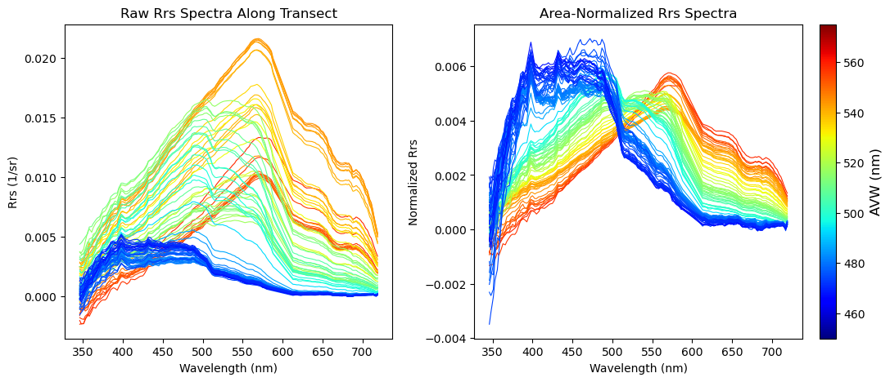

Interacting with hyperspectral Remote Sensing Reflectance (Rrs)
It can be a little tricky working with a netcdf that is (…checks notes) 172 layers thick. Each individual layer in the PACE_OCI*_AOP files represents a 1272 x 1709 array of remote sensing reflectance values. This is a lot of information to take in, so how can we better conceptualize this information?
Cue up triumphant brass horn noises
Enter the realm of the Apparent Visible Wavelength (or AVW). Let’s not go into too much detail here so that we can get to work, but in short, the AVW represents a one-dimensional variable that describes the weighted harmonic mean of a given Rrs spectrum. Imagine trying to balance a single Rrs spectrum on the tip of a pin - the wavelength where the spectrum is perfectly balanced is the AVW (units of nm). This balance point shifts proportionally in response to sublte changes in that spectrum. As a typical rule of thumb, lower AVW values (440 - 490 nm) represent relatively clear, less productive waters while higher AVW values (490 - 600 nm) represent more turbid, productive water masses. Capiche?
Let’s dive in and mess around with some spectra then, and see what these images are trying to tell us. By the end of this tutorial, you will have:
Created a pretty map of the Apparent Visible Wavelength product
Drawn a customized transect on that image, and extracted a “slice” of data
Plotted up those lovely Rrs spectra along that transect as a function of AVW values
Extracted a user-defined 5x5 box from the image and plotted the mean Rrs with standard deviation
Are you ready?
Let’s go get some data first
Login to NASA Earth Access
import earthaccessauth = earthaccess.login()# are we authenticated?ifnot auth.authenticated:# ask for credentials and persist them in a .netrc file auth.login(strategy="interactive", persist=True)
Enter your Earthdata Login username: ryan.vandermeulen@noaa.gov
Enter your Earthdata password: ········
For these “Level 2” files, we’re downloading an individual scene, so feeding it a bounding box will help narrow down the results. Here, I’m looking for a scene off the coast of Louisiana, on March 5, 2025.
You don’t have to do this next little bit, but it helps you identify the various “groups” within the file so you know where to pull data from. Once you know, it will be the same across all the Level 2 PACE files.
import h5netcdfwith h5netcdf.File(fileset[0]) asfile: groups =list(file)groups
Pretty, right? This is a very optically diverse scene. Hidden in the Rrs data are various indicators that help determine if we’re looking at re-suspended seafloor sediments, phytoplankton blooms, dissolved organic matter, detrital materials, Loop current waters, or maybe even all of the above! Alright, let’s go ahead and dive in and see what is going on beneath the AVW “hood”.
Let’s extract some data
Take a look at the map, and think of a starting and ending point. We’re going to build a transect and extract the underlying data. I pre-filled some values, but feel free to put in your own start/end coordinates below, using the map grid as a reference. Keep in mind, we’re in the Western Hemisphere here, so the longitudes are negative (-) values, e.g., 93°W = -93.0. Latitude is looking at the bright side of life and staying positive (for this scene anyway).
Next, for every data point that was extracted along the transect, we’re going to pull together 172 layers of Rrs information and see what each of those spectra look like. But wait, there’s more! To help add some cotnext to those spectra, we’re going to make sure that we color code each spectra so that it corresponds to the colormap on our AVW image. In other words, a red-colored spectrum will represent data that you pulled from a red part of the map.
This will generate two plots. The first plot will show the Rrs spectrum “as is” in units of inverse steradians (sr^-1). It is useful to examine this, because it tells you something about the brightness of the water. Sometimes, two spectral shapes may look very similar, but the relative magnitude of values can help you determine if you’re looking at a more highly scattering water mass (higher relative magnitude) versus a highly absorbing water mass (lower relative magnitude). In the second plot, we divided the Rrs by the integrated area under the spectrum. This puts everything “equal” in terms of brightness, allowing you to focus more on absolute spectral shape differences. Both are informative in their own way.
Feel free to go back and build a new transect, explore, and get a feel for what different water masses look like.
# ---- Color setup ----cmap = plt.get_cmap("jet")norm = colors.Normalize(vmin=450, vmax=575)# Prepare figurefig, (ax_raw, ax_norm) = plt.subplots(1, 2, figsize=(14, 5), gridspec_kw={"wspace": 0.25})# ---- For setting y-limits of normalized plot ----ymin, ymax = np.inf, -np.inf# ---- Plot spectra ----for lat, lon inzip(lats, lons):# Get nearest index from 2D coordinate arrays lat_vals = rrs.latitude.values lon_vals = rrs.longitude.values dist = np.sqrt((lat_vals - lat)**2+ (lon_vals - lon)**2) i, j = np.unravel_index(np.argmin(dist), dist.shape)# Proceed with extraction spectrum = rrs_da.isel(number_of_lines=i, pixels_per_line=j).values avw_val = avw_da.isel(number_of_lines=i, pixels_per_line=j).values# Normalize spectrum area = trapezoid(spectrum, wavelengths) spec_norm = spectrum / area if area >0else spectrum# Update y-limits for normalized spectra ymin =min(ymin, np.nanmin(spec_norm)) ymax =max(ymax, np.nanmax(spec_norm))# Plot color = cmap(norm(avw_val)) ax_raw.plot(wavelengths, spectrum, color=color, linewidth=0.8) ax_norm.plot(wavelengths, spec_norm, color=color, linewidth=0.8)# ---- Shared colorbar ----sm = plt.cm.ScalarMappable(cmap=cmap, norm=norm)sm.set_array([])cbar = fig.colorbar(sm, ax=(ax_raw, ax_norm), location='right', pad=0.02)cbar.set_label("AVW (nm)", fontsize=12)# ---- Titles and labels ----ax_raw.set_title("Raw Rrs Spectra Along Transect")ax_norm.set_title("Area-Normalized Rrs Spectra")ax_raw.set_xlabel("Wavelength (nm)")ax_raw.set_ylabel("Rrs (1/sr)")ax_norm.set_xlabel("Wavelength (nm)")ax_norm.set_ylabel("Normalized Rrs")ax_norm.set_ylim(ymin -0.05* (ymax - ymin), ymax +0.05* (ymax - ymin))plt.show()

As you can likely see from your plots above, the optical properties of the ocean can be quite variable. So much so, in fact, that if we’re looking to extract values from the satellite image for more quantitative analyses (e.g., matching up to a ship or animal observation), you’re going to want a little context of the relative variability surrounding that pixel to account for spatial uncertainty.
Let’s make a match :-)
As our last exercise in this tutorial, we’re going to define a single location in the image, and then extract a 5x5 box of pixels around that central location. With this information, we will plot the mean + standard deviation of the spectra in that 5x5 box. This is a common way scientists extract data for satellite calibration, validation, and algorithm development. Let’s start by picking a point in the image.
# ---- Extract mean Rrs spectrum over a 5x5 pixel box around a target point ----print("Enter coordinates to extract Rrs over a 5x5 pixel box:")target_lat =29.0target_lon =-93.0
Enter coordinates to extract Rrs over a 5x5 pixel box:
Using that, we’ll find the closest central point by subtracting your lat/lon input from all lat/lon values in the array. Take the absolute value of that, and the lowest number will yield your closest pixel matchup. We’ll make a mini box that goes +2 pixels out in every direction, which translates to a 5x5 pixel cube that we can run our statistics on.
Well folks, there you have it. Hyperspectral data, demystified. Well, maybe not entirely, but the tools here can be adapted to really help you explore the data and get a little more hands on with the raw reflectance information. Users often shy away from this information in favor of more geophysical variables that can be modeled and explained in the context of an ecosystem, like chlorophyll-a. This is completely understandable, but do keep in mind that every step you get away from the refelctance introduces additional uncertainties. Some folks have found that using raw reflectance values can outperform the use of more derived products, as in the case of modeling Atlantic Sturgeon habitat.